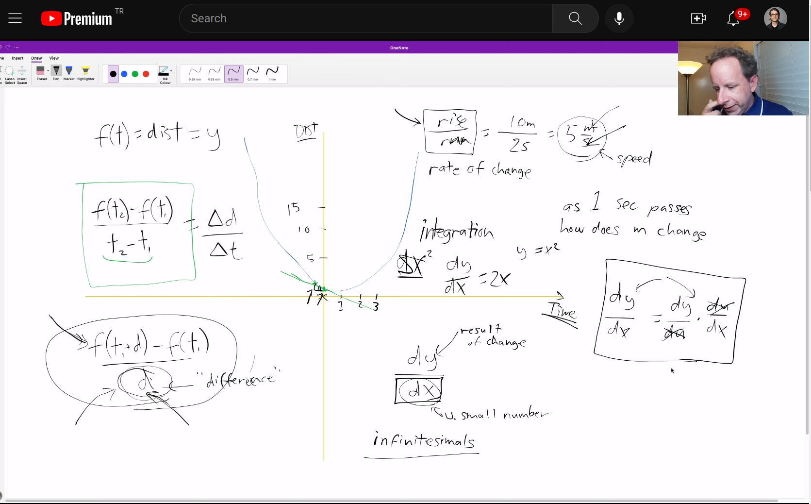
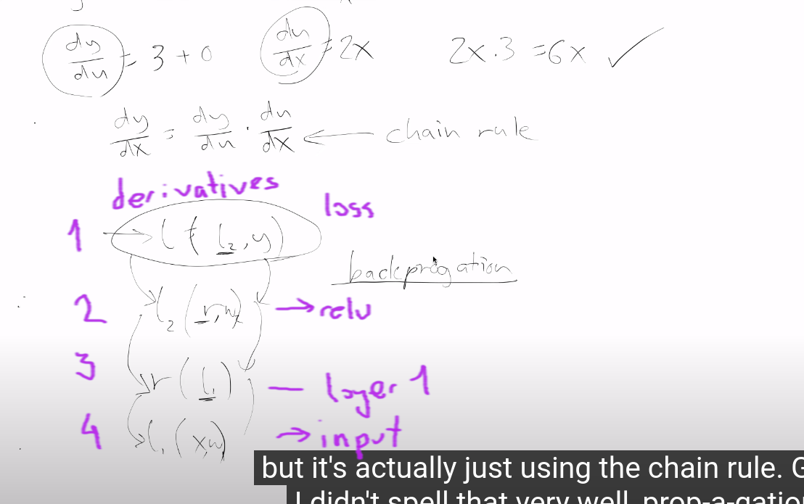

import pickle,gzip,math,os,time,shutil,torch,matplotlib as mpl, numpy as np
from pathlib import Path
from torch import tensor
from fastcore.test import test_close
torch.manual_seed(42)
mpl.rcParams['image.cmap'] = 'gray'
torch.set_printoptions(precision=2, linewidth=125, sci_mode=False)
np.set_printoptions(precision=2, linewidth=125)
path_data = Path('data')
path_gz = path_data/'mnist.pkl.gz'
with gzip.open(path_gz, 'rb') as f: ((x_train, y_train), (x_valid, y_valid), _) = pickle.load(f, encoding='latin-1')
x_train, y_train, x_valid, y_valid = map(tensor, [x_train, y_train, x_valid, y_valid])This is not my content it’s a part of Fastai’s From Deep Learning Foundations to Stable Diffusion course. I add some notes for me to understand better thats all. For the source check Fastai course page.
The forward and backward passes

Foundations version
Basic architecture
n,m = x_train.shape
c = y_train.max()+1
n,m,c(50000, 784, tensor(10))# num hidden
nh = 50w1 = torch.randn(m,nh)
b1 = torch.zeros(nh)
w2 = torch.randn(nh,1)
b2 = torch.zeros(1)def lin(x, w, b): return x@w + bt = lin(x_valid, w1, b1)
t.shapetorch.Size([10000, 50])def relu(x): return x.clamp_min(0.)t = relu(t)
ttensor([[ 0.00, 11.87, 0.00, ..., 5.48, 2.14, 15.30],
[ 5.38, 10.21, 0.00, ..., 0.88, 0.08, 20.23],
[ 3.31, 0.12, 3.10, ..., 16.89, 0.00, 24.74],
...,
[ 4.01, 10.35, 0.00, ..., 0.23, 0.00, 18.28],
[10.62, 0.00, 10.72, ..., 0.00, 0.00, 18.23],
[ 2.84, 0.00, 1.43, ..., 0.00, 5.75, 2.12]])def model(xb):
l1 = lin(xb, w1, b1)
l2 = relu(l1)
return lin(l2, w2, b2)res = model(x_valid)
res.shapetorch.Size([10000, 1])Loss function: MSE
(Of course, mse is not a suitable loss function for multi-class classification; we’ll use a better loss function soon. We’ll use mse for now to keep things simple.)
res.shape,y_valid.shape(torch.Size([10000, 1]), torch.Size([10000]))(res-y_valid).shapetorch.Size([10000, 10000])We need to get rid of that trailing (,1), in order to use mse.
res[:,0].shapetorch.Size([10000])res.squeeze().shapetorch.Size([10000])(res[:,0]-y_valid).shapetorch.Size([10000])y_train,y_valid = y_train.float(),y_valid.float()
preds = model(x_train)
preds.shapetorch.Size([50000, 1])def mse(output, targ): return (output[:,0]-targ).pow(2).mean()mse(preds, y_train)tensor(4308.76)Gradients and backward pass
from sympy import symbols,diff
x,y = symbols('x y')
diff(x**2, x)\(\displaystyle 2 x\)
diff(3*x**2+9, x)\(\displaystyle 6 x\)
Steps of the back-propagation

Further reading
- check here too for a more detailed explanation of backpropagation. Same thing but includes extra-steps. https://course19.fast.ai/videos/?lesson=8m around 1:53 code here too https://github.com/fastai/course-v3/blob/master/nbs/dl2/02_fully_connected.ipynb
- Gradient of the relu.
- mse grad( gradient of the loss)
- gradient of the linear layer.
- The Intuitive Notion of the Chain Rule
- The Matrix Calculus You Need For Deep Learning
# keywords python debugger debugdef lin_grad(inp, out, w, b):
# grad of matmul with respect to input
inp.g = out.g @ w.t()
#import pdb; pdb.set_trace()
w.g = (inp.unsqueeze(-1) * out.g.unsqueeze(1)).sum(0)
b.g = out.g.sum(0)def forward_and_backward(inp, targ):
# forward pass:
l1 = lin(inp, w1, b1)
l2 = relu(l1)
out = lin(l2, w2, b2)
diff = out[:,0]-targ
loss = diff.pow(2).mean()
# backward pass:
out.g = 2.*diff[:,None] / inp.shape[0]
lin_grad(l2, out, w2, b2)
l1.g = (l1>0).float() * l2.g
lin_grad(inp, l1, w1, b1)forward_and_backward(x_train, y_train)# Save for testing against later
def get_grad(x): return x.g.clone()
chks = w1,w2,b1,b2,x_train
grads = w1g,w2g,b1g,b2g,ig = tuple(map(get_grad, chks))We cheat a little bit and use PyTorch autograd to check our results.
def mkgrad(x): return x.clone().requires_grad_(True)
ptgrads = w12,w22,b12,b22,xt2 = tuple(map(mkgrad, chks))def forward(inp, targ):
l1 = lin(inp, w12, b12)
l2 = relu(l1)
out = lin(l2, w22, b22)
return mse(out, targ)loss = forward(xt2, y_train)
loss.backward()for a,b in zip(grads, ptgrads): test_close(a, b.grad, eps=0.01)Refactor model
Layers as classes
class Relu():
def __call__(self, inp):
self.inp = inp
self.out = inp.clamp_min(0.)
return self.out
def backward(self): self.inp.g = (self.inp>0).float() * self.out.gclass Lin():
def __init__(self, w, b): self.w,self.b = w,b
def __call__(self, inp):
self.inp = inp
self.out = lin(inp, self.w, self.b)
return self.out
def backward(self):
self.inp.g = self.out.g @ self.w.t()
#self.w.g = self.inp.t() @ self.out.g
#self.b.g = self.out.g.sum(0)class Mse():
def __call__(self, inp, targ):
self.inp,self.targ = inp,targ
self.out = mse(inp, targ)
return self.out
def backward(self):
self.inp.g = 2. * (self.inp.squeeze() - self.targ).unsqueeze(-1) / self.targ.shape[0]class Model():
def __init__(self, w1, b1, w2, b2):
self.layers = [Lin(w1,b1), Relu(), Lin(w2,b2)]
self.loss = Mse()
def __call__(self, x, targ):
for l in self.layers: x = l(x)
return self.loss(x, targ)
def backward(self):
self.loss.backward()
for l in reversed(self.layers): l.backward()model = Model(w1, b1, w2, b2)loss = model(x_train, y_train)model.backward()test_close(w2g, w2.g, eps=0.01)
test_close(b2g, b2.g, eps=0.01)
test_close(w1g, w1.g, eps=0.01)
test_close(b1g, b1.g, eps=0.01)
test_close(ig, x_train.g, eps=0.01)Module.forward()
class Module():
def __call__(self, *args):
self.args = args
self.out = self.forward(*args)
return self.out
def forward(self): raise Exception('not implemented')
def backward(self): self.bwd(self.out, *self.args)
def bwd(self): raise Exception('not implemented')class Relu(Module):
def forward(self, inp): return inp.clamp_min(0.)
def bwd(self, out, inp): inp.g = (inp>0).float() * out.gclass Lin(Module):
def __init__(self, w, b): self.w,self.b = w,b
def forward(self, inp): return inp@self.w + self.b
def bwd(self, out, inp):
inp.g = self.out.g @ self.w.t()
self.w.g = inp.t() @ self.out.g
self.b.g = self.out.g.sum(0)class Mse(Module):
def forward (self, inp, targ): return (inp.squeeze() - targ).pow(2).mean()
def bwd(self, out, inp, targ): inp.g = 2*(inp.squeeze()-targ).unsqueeze(-1) / targ.shape[0]model = Model(w1, b1, w2, b2)loss = model(x_train, y_train)model.backward()test_close(w2g, w2.g, eps=0.01)
test_close(b2g, b2.g, eps=0.01)
test_close(w1g, w1.g, eps=0.01)
test_close(b1g, b1.g, eps=0.01)
test_close(ig, x_train.g, eps=0.01)Autograd
from torch import nn
import torch.nn.functional as Fclass Linear(nn.Module):
def __init__(self, n_in, n_out):
super().__init__()
self.w = torch.randn(n_in,n_out).requires_grad_()
self.b = torch.zeros(n_out).requires_grad_()
def forward(self, inp): return inp@self.w + self.bclass Model(nn.Module):
def __init__(self, n_in, nh, n_out):
super().__init__()
self.layers = [Linear(n_in,nh), nn.ReLU(), Linear(nh,n_out)]
def __call__(self, x, targ):
for l in self.layers: x = l(x)
return F.mse_loss(x, targ[:,None])model = Model(m, nh, 1)
loss = model(x_train, y_train)
loss.backward()l0 = model.layers[0]
l0.b.gradtensor([-19.60, -2.40, -0.12, 1.99, 12.78, -15.32, -18.45, 0.35, 3.75, 14.67, 10.81, 12.20, -2.95, -28.33,
0.76, 69.15, -21.86, 49.78, -7.08, 1.45, 25.20, 11.27, -18.15, -13.13, -17.69, -10.42, -0.13, -18.89,
-34.81, -0.84, 40.89, 4.45, 62.35, 31.70, 55.15, 45.13, 3.25, 12.75, 12.45, -1.41, 4.55, -6.02,
-62.51, -1.89, -1.41, 7.00, 0.49, 18.72, -4.84, -6.52])